業務の稼働削減はもちろん、社宅に関するリスク管理までトータルに解決いたします。
企業の社宅管理業務は、専門知識とともに物件確保や契約、敷金の管理などさまざまな折衝と事務処理が必要です。NTTビジネスアソシエの社宅管理代行サービス「teNta Ace（テンタエース）」（転貸方式）をご利用いただくことにより、お客さまの稼働の大幅削減はもちろん、敷金に関わるオフバランス化や様々なリスク回避が可能になります。


社宅管理チェック
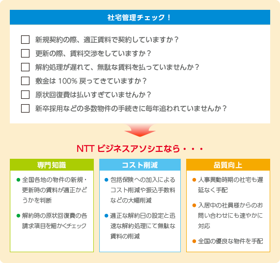サービス概要
NTTビジネスアソシエにて、借上社宅管理のフルアウトソーシングを実現！！
企業様にとって、事務代行の窓口がNTTビジネスアソシエになるのはもちろん、貸主もNTTビジネスアソシエに一本化となります。賃貸借の個別契約の必要がなくなるほか、敷金は解約時に100%返還いたしますので、経理業務の負担も軽くなります。（原状回復費は、別途要）。
専門スタッフ
国家資格をはじめ様々な資格をもったスペシャリストが対応いたします
- 宅地建物取引士
- ファイナンシャル・プランナー
- マンション管理士
- 一級建築士
- ファシリティマネジャー
- 管理業務主任者 等

導入メリット
稼働削減、コスト削減、社宅品質の向上など、サービス導入のメリットについてご説明いたします。
稼働削減
窓口の一元化
従来、企業様は不動産会社や入退去等関係各所とのやりとりが必要でしたが、企業様の対応先はNTTビジネスアソシエのみとなります。
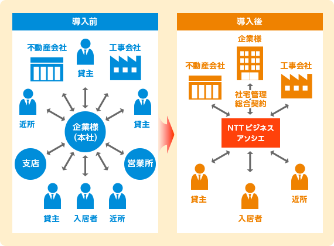業務の大幅な削減
契約・支払い業務、煩雑なデータ作成・管理稼働等の業務が削減できます。
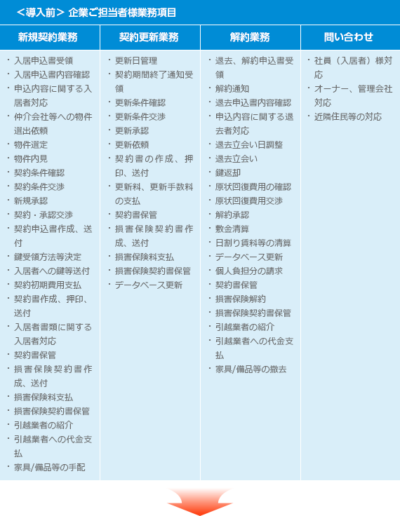 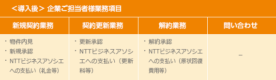人事異動時期・新卒採用時期の稼働削減
新卒採用時期の多数物件の契約や入居者対応も全てNTTビジネスアソシエにて行いますので、ご担当者様の時期による稼働変動は無くなります。
コスト削減
賃料交渉、原状回復費交渉、解約遅れの日割り賃料等の削減
専門スタッフにより、新規借入時から解約時まで費用の適正化と無駄の削減を実現いたします。
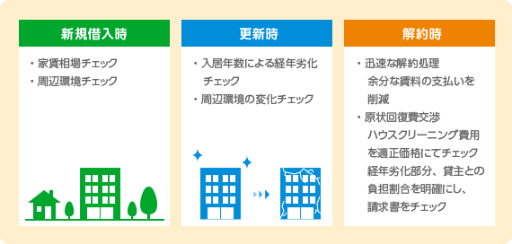火災保険料の削減
弊社に社宅管理代行を委託いただいた企業様用に損害保険包括メニューもご用意いたしております。
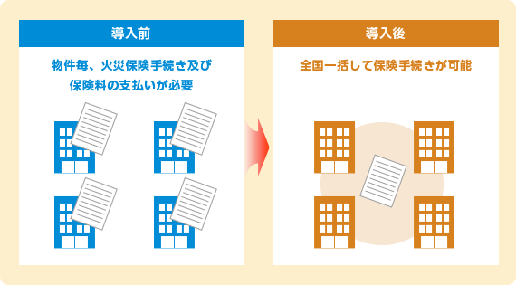振込み手数料の削減
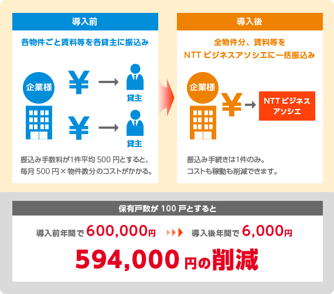郵便代金の削減
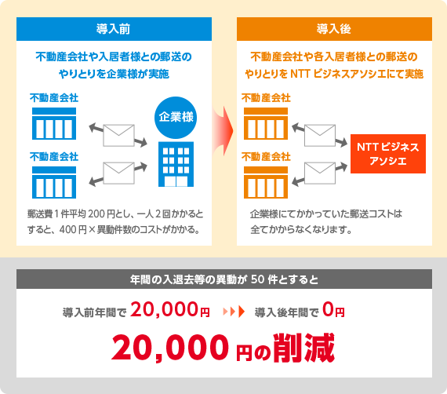システム構築、保守費用の削減
各種データはNTTビジネスアソシエにて管理いたしますので、企業様はシステム構築をする必要がございません。もちろん保守する必要もなくなります。
人件費の削減
これまで社宅管理業務に関わっていた方の稼働（人件費）が大幅に削減されます。
質の向上
全国展開の不動産会社及び各地域の不動産会社と提携しておりますので、企業様にご満足いただける全国各地の物件をご紹介いたします
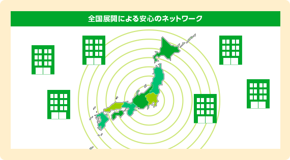社員様へのサービス充実
社員（入居者）様へのご対応はNTTビジネスアソシエの専門スタッフが迅速に行います。これまで、どうしても時間のかかっていた入退去の手配も遅滞なく短期間で手配。ご入居中のお問い合わせにもお待たせすることなく対応いたします。
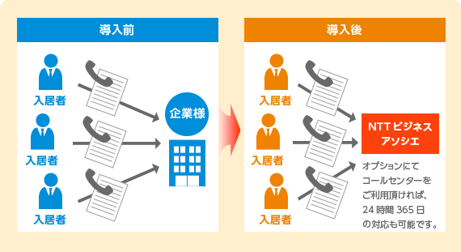業務スキル継承の問題解消
業務に精通している方がご転勤・ご退職された場合、業務ををうまく引き継げない場合がございます。NTTビジネスアソシエへお任せいただければ、そのご心配は不要となります。
専門知識の獲得
不動産のプロにアウトソースすることで、企業様は、社宅（不動産）に関する専門知識を獲得したのと同様となります。
導入フロー
お客さま企業の現状分析から社宅管理代行サービス開始までの導入フローについてご説明いたします。
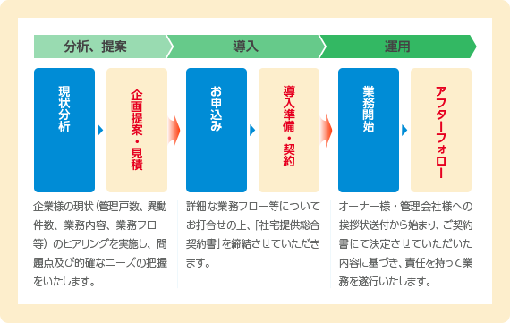オプションメニュー
様々なオプションメニューもご用意しております。
敷金ゼロ
原状回復費と相殺されて経理業務を複雑にしていた預入敷金の管理が不要となります。また、これまで預入金としていた経費を他事業へ有効活用することが可能です。
安心パック（火災保険＋コールセンター）
月払い・日割り請求の火災保険をご提供可能です。解約返戻金がほとんどない従来ご利用の保険と比較し、格段に費用削減となります。また、各物件の管理会社が対応できない時間（夜間・休日）の問い合わせ受付・緊急対応をいたします。
お引越
入居時・退去時等のお引越の手配も承ります。引越依頼も引越代金の支払いも全てNTTビジネスアソシエに一本化となり、業務の効率化・コスト削減を実現します。
家具・家電付き物件
ご要望にあわせ、備品や家具・家電付きの物件をご用意いたします。短期借入の場合はもちろん、これまで購入し、在庫管理・減価償却していた稼働を削減いたします。
ウィークリーマンション
短期間の赴任や研修等の長期出張など、必要な期間に応じて、ウィークリー・マンスリーマンションをご用意いたします。月払いも選択可能です。
社宅制度（福利厚生）のコンサルティング
社宅制度をはじめとした福利厚生制度は戦略的な再構築が求められています。様々な社員がそれぞれのニーズ、タイミングに合わせて活用できる制度、システムの構築をサポートいたします。
給与控除データ作成
社宅使用料の給与データへの反映から給与業務のフルアウトソーシングまで承ります。
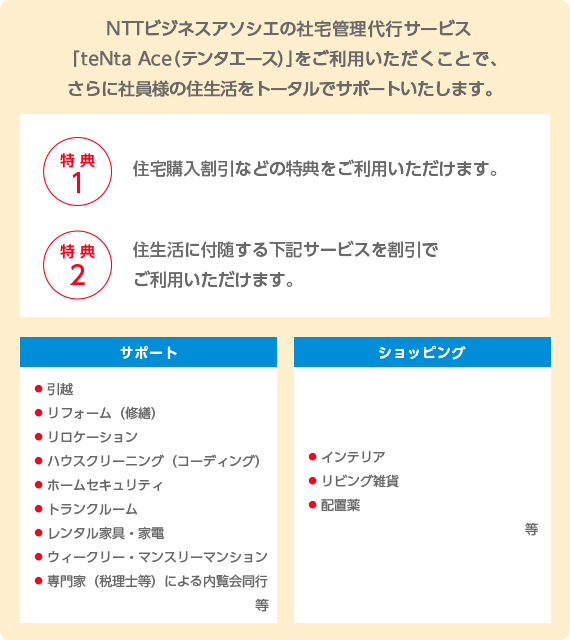